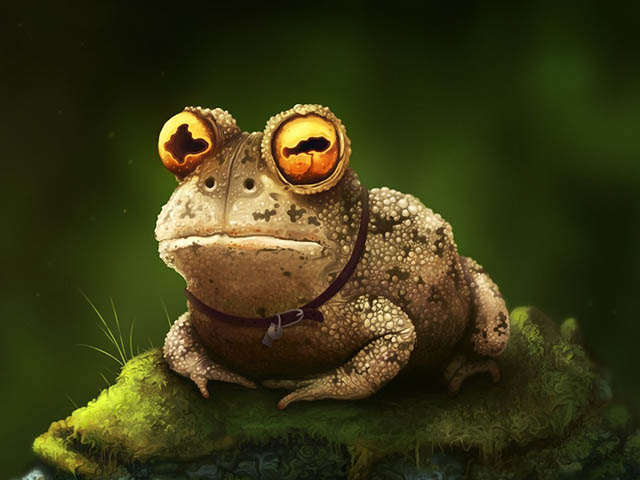

Московский образовательный интернет-телеканал
 В волшебном мире Магикс есть школа Алфея, где юных фей обучают магическим навыкам. Пять учениц этой школы защищают свою планету от зла. Каждая из фей обладает особенным характером и способностями: Техна может разобраться с любой электроникой, тихая и застенчивая Флора любит растения, Муза — настоящая меломанка, Стела — наследная принцесса планеты Солярия, а Блум — признанный лидер в этой компании. Клуб Винкс был создан феями в знак вечной дружбы и взаимной помощи. У каждой юной волшебницы есть миниатюрные помощницы — пикси. Жизнь участниц Клуба Винкс была бы простой и беззаботной, если бы не злые Айси, Дарси и Сторми — три ведьмы из Клуба Трикс, которые пытаются подчинить себе мир. Их козни доставят немало хлопот феям, и только искренняя дружба и взаимовыручка помогут Клубу Винкс победить зло! Седьмой сезон мультсериала создатели посвятили теме защиты окружающей среды, чтобы объяснить детям всего мира, что наша планета нуждается в заботе и поддержке. Феи Винкс столкнутся с новыми испытаниями: в этот раз они отправятся в путешествие по Магической Вселенной (в том числе и на планету Земля), чтобы спасти Сказочных Зверей от опасного злого оборотня Калшара и его брата Брафилиуса, неуклюжего волшебника. Феи Винкс будут наделены силой Баттерфликс, благодаря которой они подружатся с шестью Магическими Зверями
 webcam
webcam